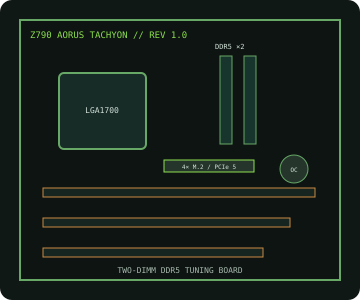

[ INDIVIDUAL COMPONENT // MOTHERBOARDS ]
GIGABYTE Z790 AORUS TACHYON (rev. 1.0)
LGA1700 two-DIMM DDR5 overclocking board for 12th–14th Gen Intel Core processors, with PCIe 5.0 expansion and four M.2 positions.

IDENTIFICATION: Exact product is Z790 AORUS TACHYON rev. 1.0. This two-slot memory layout differs from the four-DIMM Z790 boards.
Specifications
| Exact board / revision | GIGABYTE Z790 AORUS TACHYON, rev. 1.0 |
|---|---|
| Socket / chipset / CPU | LGA1700, Intel Z790 Express; 12th/13th/14th Gen Intel Core processors as enumerated by the rev. 1.0 CPU list and minimum BIOS. |
| Form factor | ATX, approximately 305 × 244 mm. |
| Memory | Two dual-channel DDR5 DIMM sockets, up to 128 GB. XMP and overclocked data rates depend on the CPU, BIOS and two-DIMM QVL. |
| PCI Express | Three x16-length positions: two CPU-connected PCIe 5.0 slots operate at x16 or x8/x8; the chipset-connected third slot is PCIe 3.0 x4. |
| Storage | Four M.2 sockets, all NVMe PCIe 4.0 x4-class with CPU/chipset routing by socket, plus six SATA 6 Gb/s ports; check the manual for sharing. |
| Networking / I/O | 2.5GbE wired LAN, Wi-Fi 6E/BT, USB 3.2 connectivity including Type-C; consult the manual for exact rear ports and headers. |
| BIOS / compatibility | Use the rev. 1.0 BIOS, CPU list and memory QVL; verify minimum firmware for the selected 13th/14th Gen CPU and DIMM density. |
Compatibility and service notes
Confirm exact CPU model and firmware on the revision-specific support page. Two DDR5 slots are deliberate for high-frequency tuning; follow the QVL and memory population guidance. Check PCIe bifurcation and M.2/SATA sharing before installing cards or drives.
Save the firmware identifier before tuning, reset to defaults while troubleshooting, and use ESD-safe handling. Do not use firmware for the similarly named TACHYON X SKU.
Manufacturer sources
- GIGABYTE — Z790 AORUS TACHYON rev. 1.0 specificationsOfficial product specification and manual.
- GIGABYTE — rev. 1.0 CPU support, BIOS and memory QVLExact CPU qualification and firmware requirements.